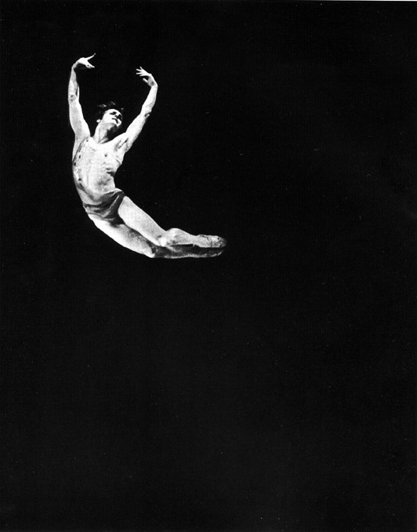
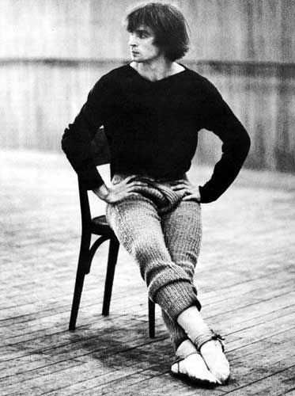
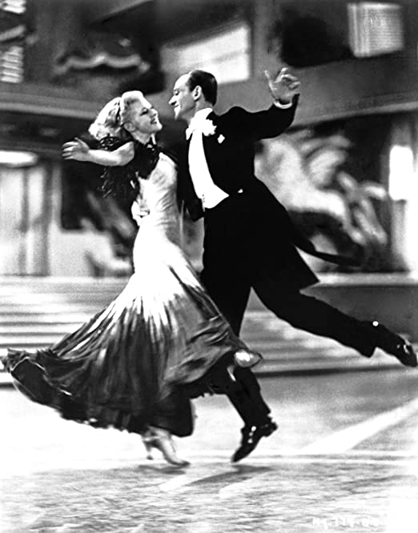

Dansul este un mijloc artistic de exprimare a unui mesaj printr-o succesiune de mișcări ritmice, variate și expresive ale corpului, executate în ritmul muzicii, având caracter religios, de artă sau de divertisment.
Istoria dansului
Oamenii au dansat de mii de ani – figuri de dansatori apar in picturile rupestre din Europa si Africa, datand din timpuri preistorice. Multe dansuri primitive sunt inca populare si astazi, fiind corelate cu ceremonii religioase sau superstitii. Dansul englez morris se bazeaza pe vechi ritualuri razboinice, iar dansatorii voodoo din Haiti intra in transa in timp ce cheama spiritele. Expresivul dans dramatic al vechilor greci a avut o influenta de lunga durata asupra culturii Vestului. Dansurile de societate, unde sunt respectate seturi de pasi, au aparut cu multe secole in urma. Dansul Bugaku din Japonia a aparut in secolul al VII-lea. In Europa medievala, dansurile de societate erau populare la curtile regale. Multe erau adaptari are dansurilor populare ale oamenilor obisnuiti. In secolul al XV-lea existau deja profesori de dans care predau ultimele dansuri aparute.
Dansul în spațiu Românesc
Poporul român are dansuri de o deosebită bogăție și varietate, care se execută individual, sau în grup (perechi, linie, cerc), diferind de la regiune la regiune. Caracteristică este practica folosirii ca suport muzical a unor melodii diverse pentru unul și același dans, ca și executarea pe aceeași melodie a mai multor dansuri.
Cele mai răspândite sunt hora, sârba, învârtita, călușul și multe altele, cu tendința de generalizare datorită activităților artistice de amatori și, îndeosebi, a televiziunii.
În creația muzicală românească, dansurile populare au fost utilizate mai întâi în aranjamente, rapsodii instrumentale, apoi au stat la baza unor prelucrări mai complexe, mergând până la invenții melodico-ritmice sugerate de structurile tipice.
Dansul românesc a pătruns nu numai în muzica de balet a lui Mihail Jora, Paul Constantinescu, Zeno Vancea ș.a., ci și în creația corală, camerală și simfonică a lui George Enescu, M. Jora, Mihail Andricu, Marțian Negrea, P. Constantinescu, Theodor Rogalski ș.a
Tipuri de dansuri
- Salsa
- Reggaeton
- Dansuri orientale
- Dansul irlandez
- Flamenco
- Zumba
- Balet
Cei mai buni dansatori din lume
- Mikhail Baryshnikov
- Rudolf Nureyev
- Fred Astaire și Ginger Rogers


